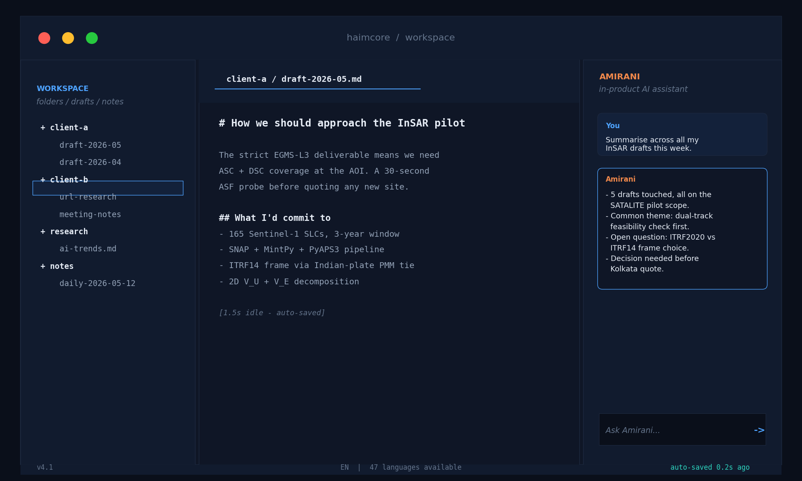
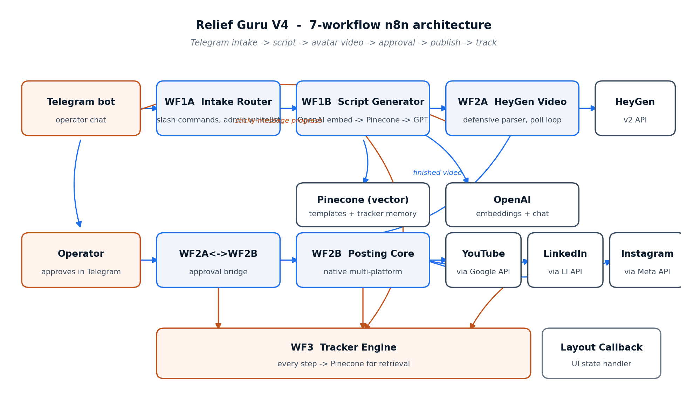
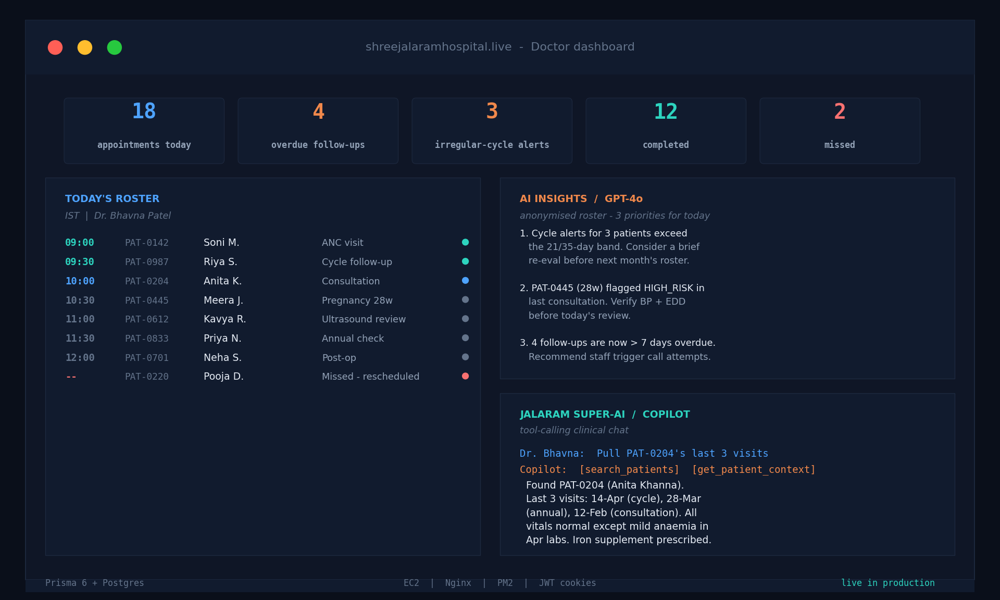
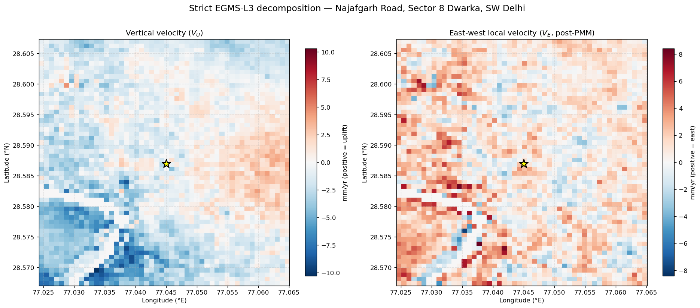
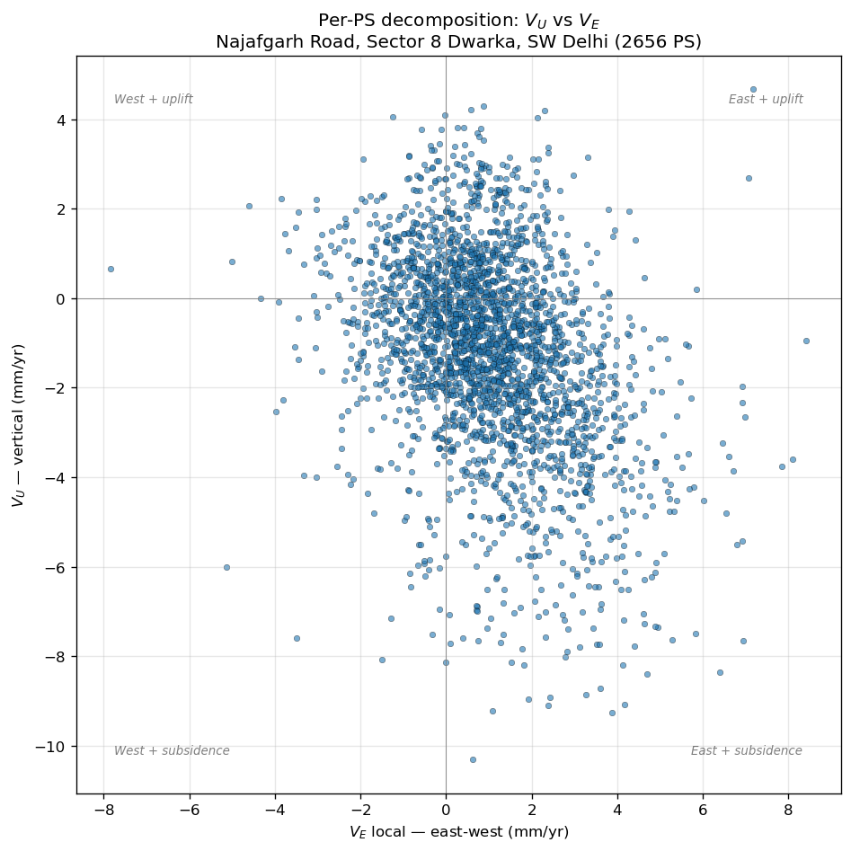
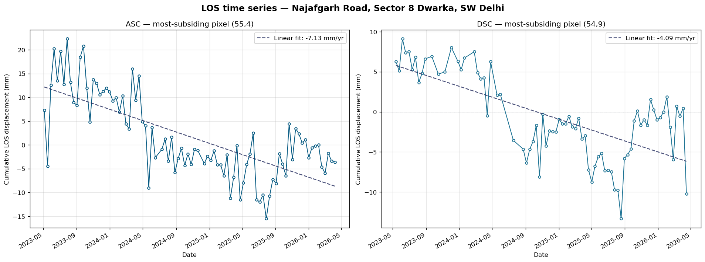
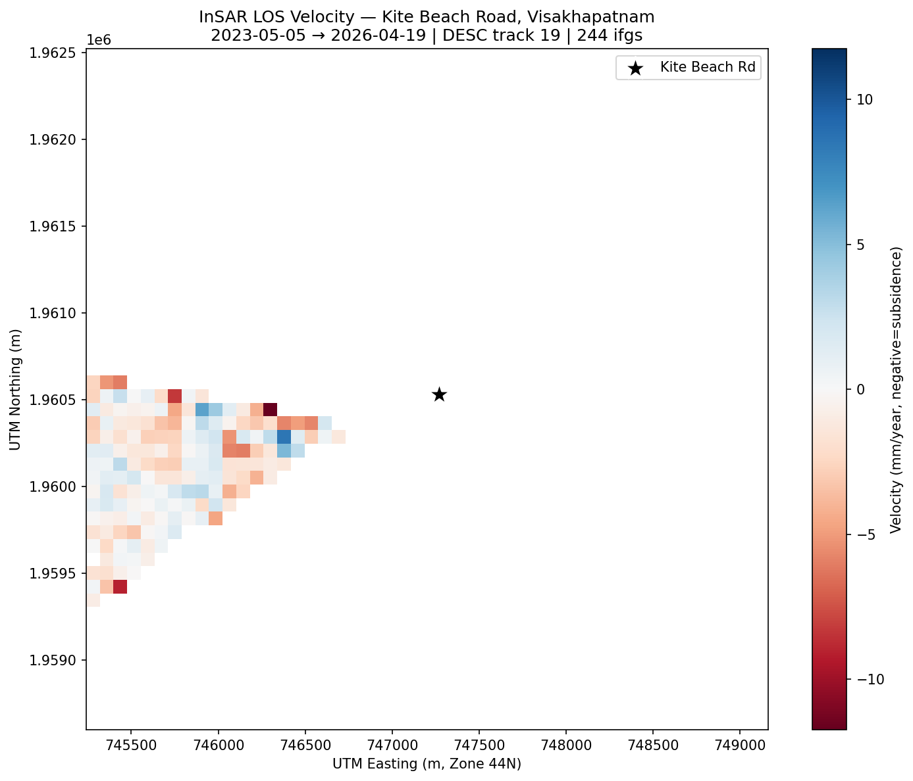

AI / Automation Engineer · InSAR & Geospatial · Full-Stack
I build AI-assisted software and the plumbing around it — production web apps, Telegram-driven workflow automations, healthcare platforms, and Sentinel-1 InSAR data pipelines. Recently I picked up SAR processing from scratch and delivered a strict EGMS-L3 equivalent road-subsidence pilot on a 3-year Sentinel-1 stack.







SystemLog on hospital, run trackers on Relief
Guru, audit folders per release on Haimcore.
Most comfortable on AI-assisted product work, automation pipelines, full-stack TypeScript / Python, and geospatial processing — ideally where some part of the problem hasn’t been solved cleanly before and the engineering judgement matters as much as the code.